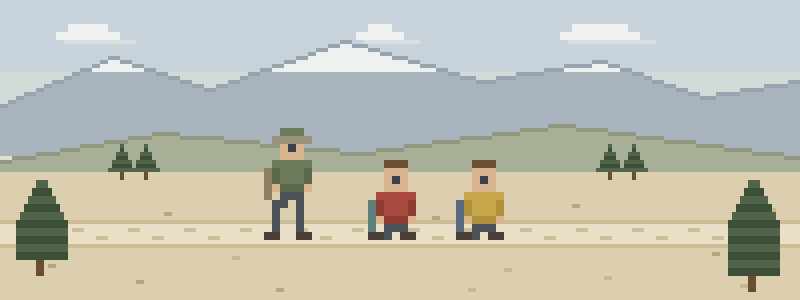

On your watch
- Lunch, bee, epi in a pack. Hives at two minutes, a wheeze at five, and the auto-injector is somewhere in the group gear. Knowing where the epi lives is a before-lunch decision.
- The bouldering fall. A scout puts a hand out and the wrist goes wrong. Splint it, check the fingers before and after, and keep the rest of the group led.
- The quiet camper. The Type 1 kid is sweaty, confused, and insists he’s fine. If he can swallow, sugar now — the window closes fast.
The leader’s study order
Front-loaded for what youth groups actually produce:
- Anaphylaxis — epi first, early — the youth-group emergency
- Musculoskeletal Injuries — playground physics, backcountry consequences
- Medical Emergencies — diabetes, asthma, and known conditions on your roster
- Provider Safety — the scene habits kids copy
- Evacuation — groups, messengers, and never sending one kid anywhere alone
Then pressure-test it
Interactive scenarios — one decision at a time, tempting mistakes included, debrief at the end:
- Find the Epi — the search you don’t want to be doing at minute five
- Wiggle, Feel, Warm — the FOOSH wrist, start to finish
- Sugar First — the known diabetic, going down
The certification question, honestly. “Wilderness First Aid” isn’t a regulated credential. No government body defines what a WFA card means — it means whatever the company that printed it says it means. What counts in front of a patient is whether you can do the work. This course teaches the work, free, and issues a record of completion — not a certificate, and we won’t pretend otherwise. If your organization — a scouting council, school, or camp — requires certified training from an approved provider, that requirement stands; check with them first. Use this to arrive prepared and stay sharp between renewals. If nobody requires you to hold a card, what you need are the skills, not the laminate.
Asked at leader meetings
Does this satisfy my organization’s training requirement?
Almost certainly not, and we won’t pretend otherwise. Councils, schools, and camps name their approved providers, and a free online course isn’t one — check your handbook. What this does is make the required weekend easier and the years between renewals safer.
What emergencies actually find youth groups?
The ones that arrive with the kids: allergies, asthma, diabetes. Medical histories travel into the woods, so know every camper’s conditions before the trailhead, know exactly which pack holds the epinephrine, and make “where’s the epi?” a question with a five-second answer.
How do I run an emergency and a group at the same time?
By delegating like it’s your job, because it is. One buddy pair fetches the med kit, a co-leader walks everyone else to a snack spot, and nobody goes anywhere alone, ever. You’re not the medic first; you’re the leader of a group that currently contains a patient.
What this is
Fifteen lessons, a 40-question knowledge check, sixteen practice scenarios, a printable field reference card, and a kit checklist. Free, no account, nothing recorded about you, source on GitHub. It teaches decision-making, not hands-on skill — practice the hands-on parts on a real, padded, complaining friend.
Others out there with a crowd of kids: summer camp counselors & activity directors · outdoor education instructors, university rec staff & school trip coordinators · forest school educators & early-childhood nature guides